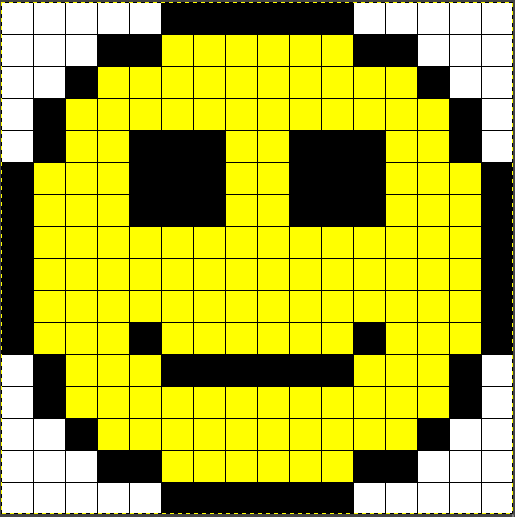

class: center, middle Computing Workshops # What's the difference between different graphics formats and why should you care? Friday, January 31st, 2020 by Oliver Stueker --- ## Outline * There are a wide number of file formats for images (photos or graphics), such as: .bmp, .gif, .png, .tiff, .tif, .jpeg, .jpg, .heif, .heic, .svg, .svgz, .ps, .eps, .pdf * The choice of the format has implications on quality and image size. --- ## What is a Pixel?  * each pixel is a data-point in a grid -- * the data for each pixel defines it's color -- * gray-scale images: one "byte" value between 0 and 255 - 0 = `x00` : black - 127 = `x70` : mid-grey - 255 = `xFF` : white -- * color images: 3 color channels for red, green, blue: - (255, 0, 0) = `xFF0000` : red - (0, 255, 0) = `x00FF00` : green - (0, 0, 255) = `x0000FF` : blue -- - (255, 255, 0) = `xFFFF00` : yellow --- ## Raster Graphics * define the size of an image (e.g. width = 16 pixels, height = 16 pixels) * for each pixel store a color intensity per color-channel (Red Green Blue => RGB) * typically 8 bit (= 1 byte) for each red, green & blue * 8 bit represent decimal values from 0 to 255; hexadecimal from 00 to FF * 3 x 8-bit = 24 bit = ~ 16 million colors can be mixed * size of the uncompressed image data is: width-in-pixels x height-in-pixels x 24-bit --- ## What is the resolution of a digital image? Examples: * common TV resolutions: * 640 x 480: Standard-definition TV (SDTV, or "480i") * 1280 x 720: High-definition TV (HDTV, "720p") * 1920 x 1080: High-definition TV (full-HDTV, "1080p") * 3840 x 2160: 4K UHD * common computer monitor resolutions with 4 x 3 ratio: * 640 x 480: VGA (mid 90's) * 800 x 600: SVGA (late 90's) * 1024 x 768: XGA (early 2000s) * 1280 x 1024: SXGA --- ## What is "dpi" / "ppi" * used for printers and displays * measures of resolution: * dpi: "dots per inch" * ppi: "pixels per inch" * dpi & ppi are often used interchangeably * relates the resolution of digital data to the display/print size: * an image with 600 x 450 pixes printed at 300 dpi will result in the dimensions 2 inches x 1.5 inches * <https://en.wikipedia.org/wiki/Pixel> --- ## Different file formats --- ### BMP - Windows Bitmap (.bmp) * raster graphics * uncompressed * files can become very large -- .valign_imgs[ * <br /><br /><br /><img src="./img/smiley-16x16.bmp" alt="bmp-smiley 16x16 at 2x" title="bmp-smiley 16x16 at 2x" width="32px" height="32px"> * <img src="./img/smiley-16x16.bmp" alt="bmp-smiley 16x16 at 20x" title="bmp-smiley 16x16 at 20x" width="320px" height="320px"> <!-- <img src="./img/smiley-16x16.bmp" alt="bmp-smiley 16x16 at 2x interpolated" title="bmp-smiley 16x16 at 2x interpolated" width="320px" height="320px" style="image-rendering: auto"> --> ] --- ### GIF - Graphics Interchange Format (.gif) * raster graphics * limited to an 8-bit palette, or 256 colors * lossless compression (LZW) * suitable for simple graphics that use only a few colors (each in 24-bit RGB color depths) * supports animations * patent expired 2004 * universally supported -- .valign_imgs[ * <br /><br /><br /> * <!-- --> ] --- ### PNG - Portable Network Graphics (.png) * raster graphics * open-source alternative to GIF * lossless compression * supports *transparency* (alpha-channel) * supports animations * widely supported -- .valign_imgs[ * <br /><br /><br /><img src="./img/smiley-16x16.png" alt="png-smiley 16x16 at 2x" title="png-smiley 16x16 at 2x" width="32px" height="32px"> * <img src="./img/smiley-16x16.png" alt="png-smiley 16x16 at 20x" title="png-smiley 16x16 at 20x" width="320px" height="320px"> <!-- <img src="./img/smiley-16x16.png" alt="png-smiley 16x16 at 2x interpolated" title="png-smiley 16x16 at 2x interpolated" width="320px" height="320px" style="image-rendering: auto"> --> ] --- ### JPEG - Joint Photographic Experts Group (.jpeg, .jpg) * raster graphics * lossy compression * **good** for photos * **bad** for graphics with large patches of uniform color or sharp edges (logos, clip-art, diagrams) * Interesting article that explains the JPEG compression: https://parametric.press/issue-01/unraveling-the-jpeg/ -- <!-- * <img src="./img/smiley-16x16_q90.jpeg" alt="jpeg-smiley 16x16 at 2x" title="jpeg-smiley 16x16 at 2x" width="32px" height="32px"> --> .valign_imgs[ * <img src="./img/smiley-16x16_q90.jpeg" alt="jpeg-smiley 16x16 at 20x Quality 90" title="jpeg-smiley 16x16 at 20x Quality 90" width="320px" height="320px"> * <img src="./img/smiley-16x16_q80.jpeg" alt="jpeg-smiley 16x16 at 20x Quality 80" title="jpeg-smiley 16x16 at 20x Quality 80" width="320px" height="320px"> * <img src="./img/smiley-16x16_q50.jpeg" alt="jpeg-smiley 16x16 at 20x Quality 50" title="jpeg-smiley 16x16 at 20x Quality 50" width="320px" height="320px"> ] --- ### HEIF - High Efficiency Image File Format (.heif, .heic) * designated successor of JPEG * better compression with same quality=higher quality with same size * supports 10-bit per color channel * still quite new and only limited support --- ### TIFF - Tagged Image File Format (.tiff, .tif) * raster graphics * uncompressed as well as lossless and lossy compressions * supports non-RGB color spaces, e.g. CMYK (Cyan Magenta Yellow blacK) * supports 10-bit per color channel * supports meta-data like resolution (dpi) or print-size * ==> Used by professionals (photographers, printing, archival) --- ### SVG - Scalable Vector Graphics (.svg, .svgz) * Vector graphics * XML-based -> can be embedded in other types of XML (HTML, MathML) * defines geometric shapes (lines, circles, polygons, Bézier curves, text, etc. ) * can be scaled without loss quality, conversion to raster graphic is done at time of display * **bad** for photos * **great** for sketches, logos, diagrams -- .valign_imgs[ <img src="./img/smiley-16x16.svg" alt="svg-smiley 16x16 at 2x" title="svg-smiley 16x16 at 2x" width="32px" height="32px"> <img src="./img/smiley-16x16.svg" alt="png-smiley 16x16 at 20x" title="png-smiley 16x16 at 20x" width="320px" height="320px"> <img src="./img/smiley-16x16.svg" alt="png-smiley 16x16 at 4000%" title="png-smiley 16x16 at 4000%" width="640px" height="640px" style="position: absolute; clip: rect(0, 320px, 320px, 0);"> ] --- ### PS/EPS - (Encapsulated) PostScript (.ps, .eps) * PostScript was developed as a "language" for sending data to (laser) printers * PS is interpreted on the micro-controller within the printer * defines text and graphics as objects on the page * very layout-centric * EPS are objects that can be embedded within a PS file/stream * can contain text, vector- and raster graphics --- ### PDF - Portable Document Format (.pdf) * PDF is based on PostScript * developed that a document can be viewed and printed on different systems resulting in the exact same layout * it's very difficult to reconstruct the original document